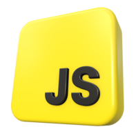
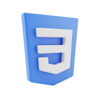

Yaaay!


sobre mim
Olá, meu nome é João Victor e eu tenho 16 anos. Sou um grande apreciador de café e amo experimentar novas variedades e métodos de preparo. Além disso, tenho habilidades em programação em JavaScript e também estou familiarizado com HTML e CSS. Atualmente, estou dedicando meu tempo para aprender React.js, uma biblioteca popular usada para criar interfaces de usuário em aplicativos da web.
Eu sou apaixonado por tecnologia e adoro aprender novas habilidades. Eu sempre estou buscando me aprimorar em programação e aperfeiçoar minhas habilidades para criar projetos incríveis. O café é uma das minhas paixões, e acredito que é a combinação perfeita para acompanhar longas horas de programação.